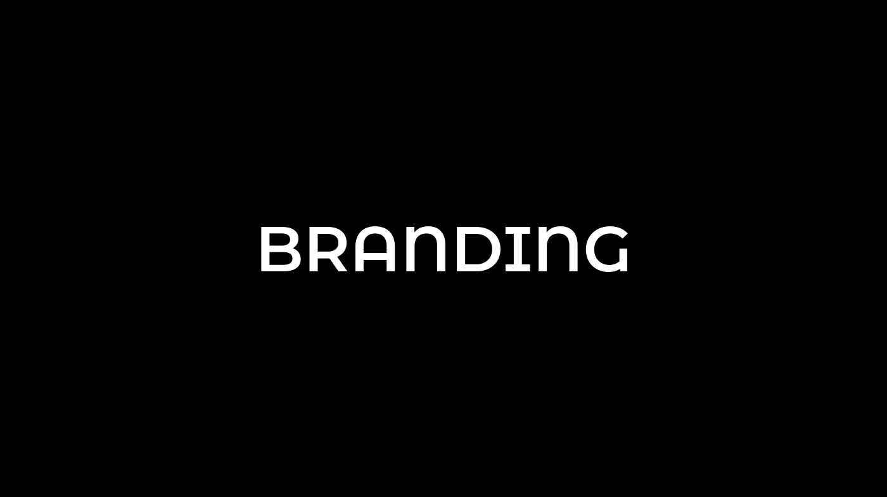
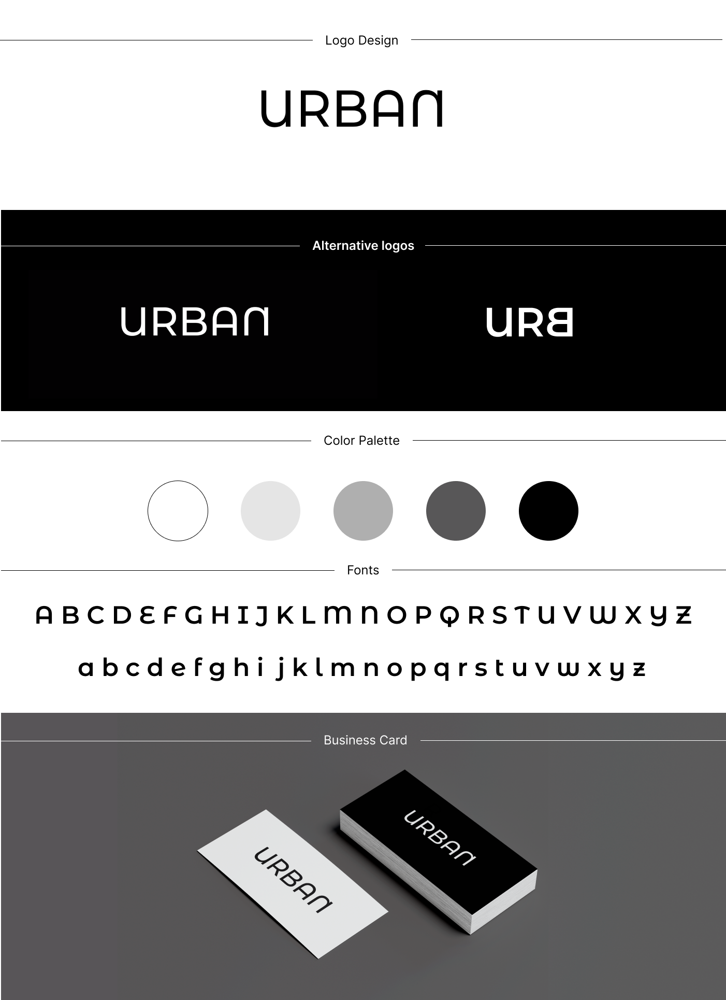
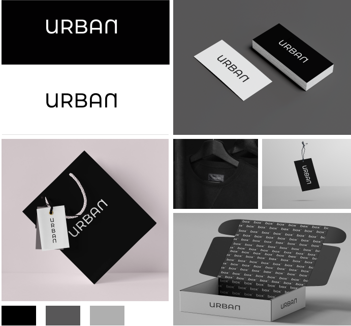

URBAN
Projeto de branding desenvolvido como trabalho de conclusão do curso de Design de Moda, com o objetivo de criar uma marca de moda e construir sua identidade visual.


Mais projetos

Projeto de branding desenvolvido como trabalho de conclusão do curso de Design de Moda, com o objetivo de criar uma marca de moda e construir sua identidade visual.

